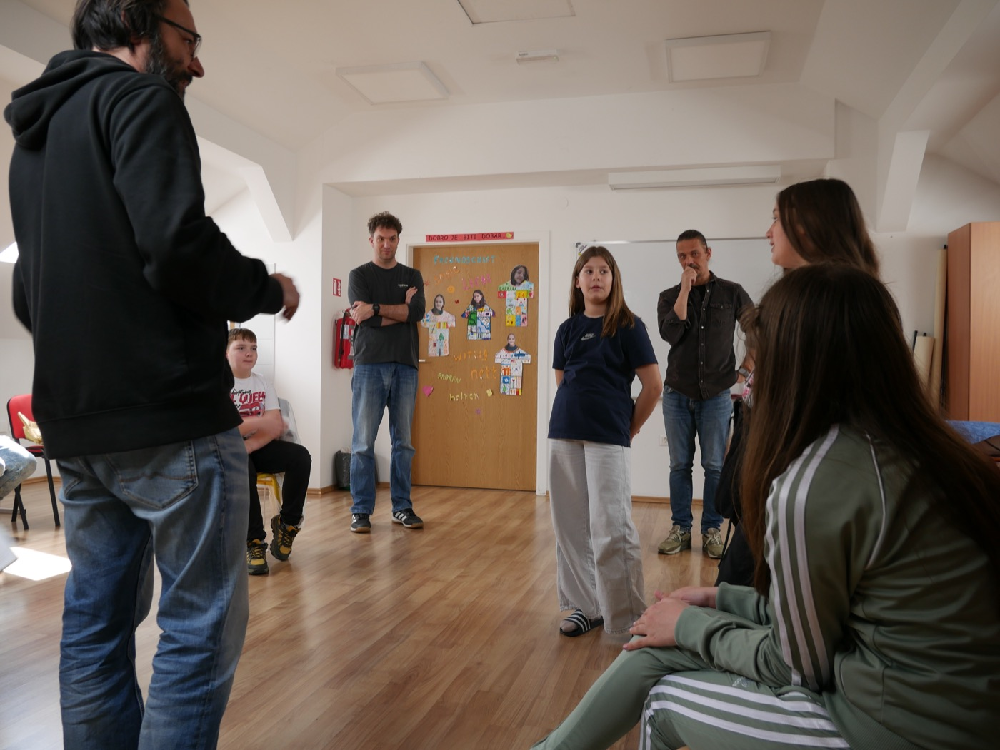
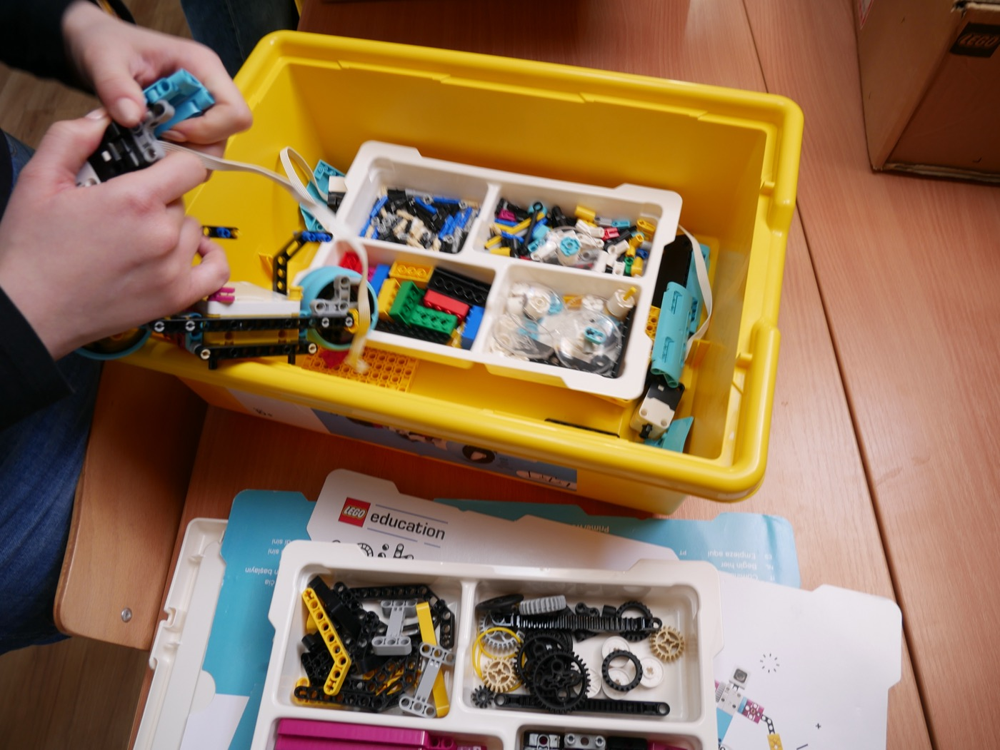

Algoritmi u praksi
Kroz programiranje sudionici uče osnovne koncepte algoritama i njihovu važnost u svakodnevnom životu.
Edukativni projekt
Radionica koja spaja kazališnu umjetnost i tehnologiju — polaznici programiraju robote s ljudskim izrazima lica i zvukom kako bi postavili scene iz klasične predstave.
Projekt je inspiriran predstavom „Romeo i Julija", u kojoj se središnja tema vrti oko slanja algoritma ovog klasičnog djela u svemir. Nakon odgledane predstave, polaznici radionice imaju priliku kroz programiranje postaviti dio predstave uz pomoć robota opremljenih ljudskim izrazima lica i zvukom.
Kroz ovu interaktivnu aktivnost polaznici ne samo unapređuju tehničke vještine, već i razvijaju dublje razumijevanje kako tehnologija može interpretirati i prenijeti složene ideje kroz umjetnički izraz.

Kroz programiranje sudionici uče osnovne koncepte algoritama i njihovu važnost u svakodnevnom životu.
Projekt pokazuje kako se tehnologija može koristiti za interpretaciju i prijenos složenih umjetničkih djela.
Sudionici unapređuju vještine programiranja, robotike i scenskog izraza kroz praktičan rad.
Promoviramo pristupe u obrazovanju koji kombiniraju umjetnost i tehnologiju na nov način.
Sudionici prvo odgledaju predstavu „Romeo i Julija" u kojoj se istražuje koncept slanja algoritma djela u svemir. Nakon predstave slijedi kratko predavanje o osnovama algoritama i njihovoj primjeni.
Polaznici koriste robote opremljene ljudskim izrazima lica i zvukom. Kroz programiranje postavljaju odabrane scene iz predstave, interpretirajući ih na nov način uz pomoć tehnologije.

Na kraju radionice sudionici prezentiraju svoje radove publici, demonstrirajući kako su pomoću algoritama i robotike uspješno rekreirali dio predstave.
Pogled u svijet u kojem se kod, roboti i kazalište susreću.